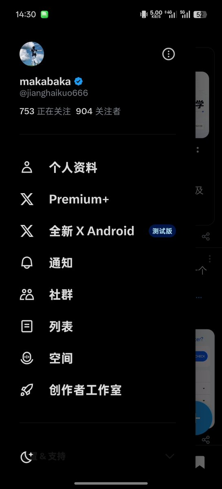

Hoshine_yosa
@Verdin14shi
@jianghaikuo666 111

makabaka
@jianghaikuo666
快到 1000 粉了。
从最开始没人看，到现在有 900 多个朋友愿意停下来关注我，真的挺神奇的。虽然不是什么特别大的数字，但对我来说已经很有意义了。
接下来想继续发一些我喜欢的内容，也希望能认识更多有意思的人。
如果你刚好刷到这里，也觉得我还挺有趣，那就顺手帮我冲一下 1000 吧。 https://t.co/6cI8Brm4Rw